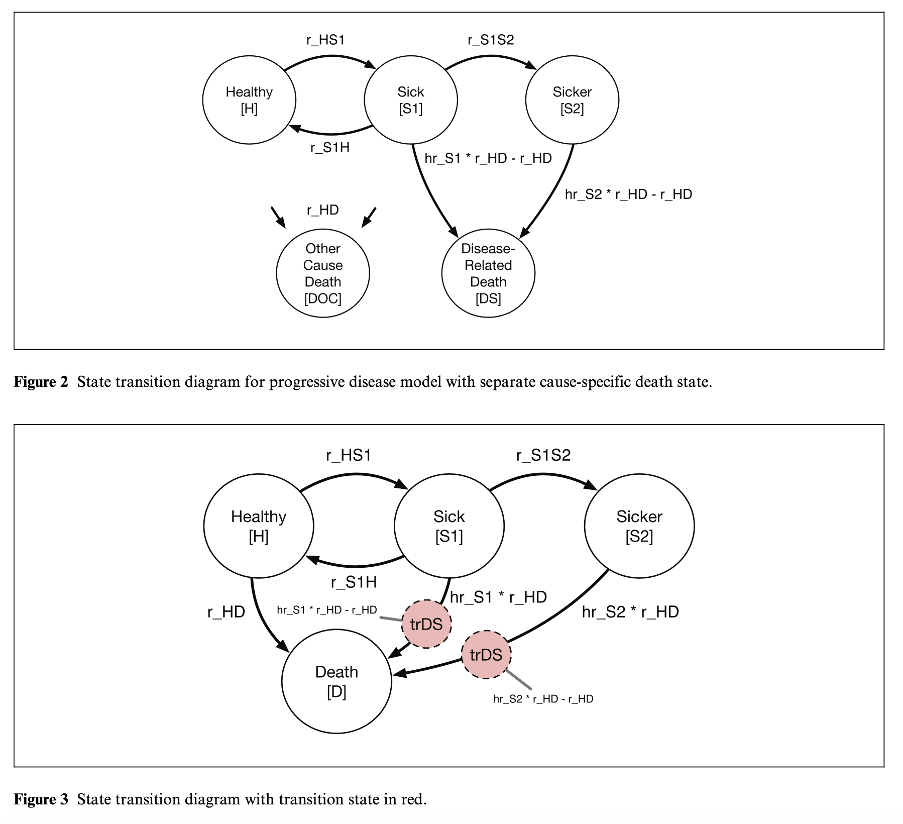
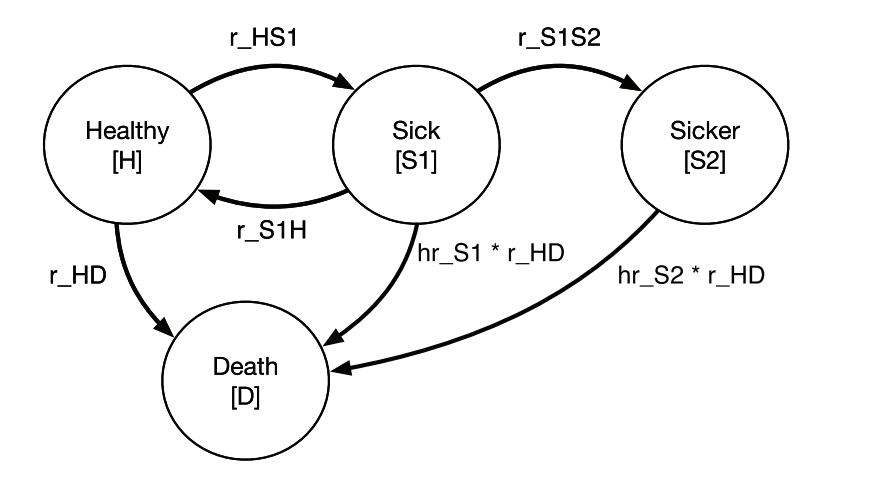
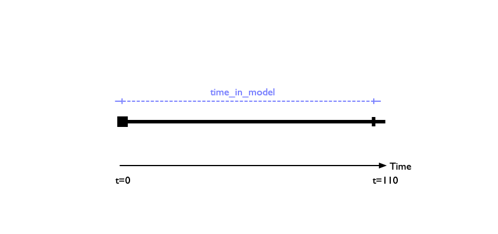
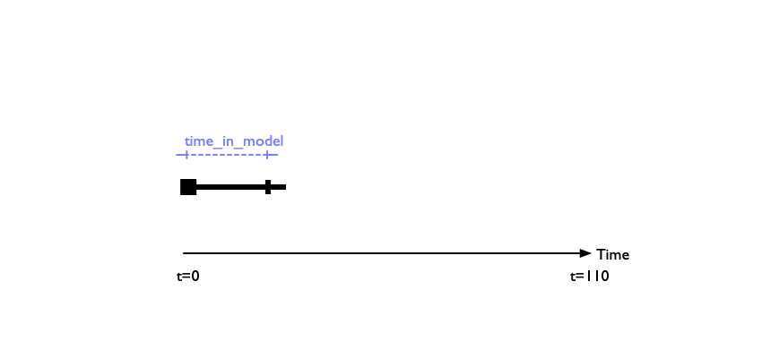
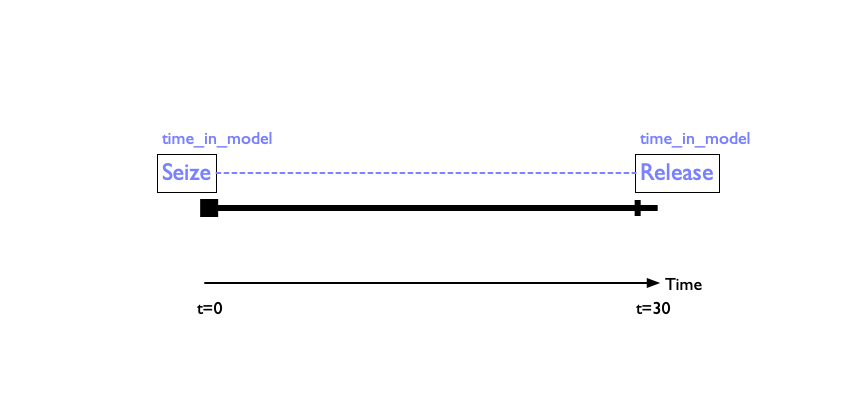
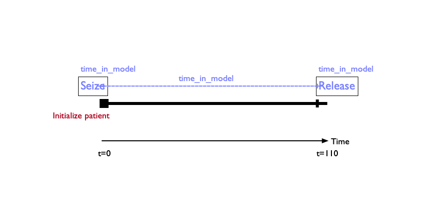
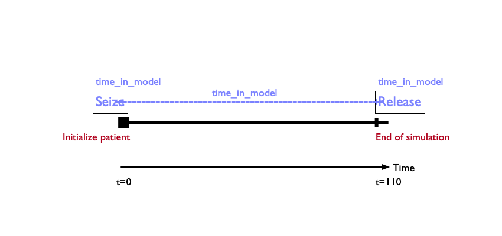

Part 3. Building a DES Progressive Disease Model
We will build up a DES that replicates the parameters and processes governing the progressive disease model in Alarid-Escudero et al. (2023).
This tutorial extends our more recent work taking the same model and demonstrating how to structure it to accurately estimate Disability-Adjusted Life Year (DALY) outcomes, published earlier this year in Medical Decision Making (Leech et al. 2025).
Patients start off healthy, and can then progress into progressive disease states (“Sick [S1],” “Sicker [S2]”)—all while facing risks of death due to background causes, and heightened risk of death while sick.
We will incrementally build up a Petri net diagram representing the same disease process.
Doing so will allow us to expand the decision problem to consider an additional dimension—resource contention for a scarce treatment—that is difficult/impossible to capture in Markov and microsimulation modeling approaches.



We start with a simple model that follows patients for \(T\) time units.
In this simple model, we have a population of “tokens” that start off in the healthy state.
For ease of visualisation, we’ll suppress the patient tokens for the remainder of our model diagram buildup.
To begin, we will assume this population can only experience one event: \(\,\)reaching the end of the simulation at some time T.
Our first step is to define the parameters governing the simulation. In this case the list of parameters is small.
We next need to step back and think about two concepts we defined earlier: resources and events.
Let’s think first about resources.
Resources are elements that a patient may use or consume during their time in the simulation.
We use the terms “use” and “consume” somewhat loosely here, because a resource could be something like a hospital bed that is needed for treatment—or it could simply be an element like time that is not constrained.
In this very simple model, we need to conceptualize our first resource, which is time in model.
The image here shows a single patient trajectory over time. We begin tracking the patient at baseline (t=0) and follow them until the end of the time horizon has been met at 30 years.
We can therefore define a resource called time in model that we track. In this case, it will trivially be 30 years for every simulated patient.
But that does not always need to be the case! Suppose the patient dies at some time before t=30. In that case, their time in the model will be shorter.
It’s also important to note that in this example patient trajectory, the resource time_in_model is unconstrained. That is, one simulated patient’s experience of time does not inhibit or limit another patient from also experiencing the elapse of time.
Because the patient is followed for a defined time horizon, we can think of the resource as beginning at the initiation of the model, and ending after the time horizon is met.
The way DES conceptualizes this idea is that the resource is “seized” upon initiation of the model, and then “released” upon exit from the model. These two time stamps can then be used to calculate the total time the resource was “used.”
Often, the seizure and/or release of resources is triggered by events. We’ll cover how to handle events in just a bit.
Resources are tracked in a counter object. In this very simple model, we only have a single resource to track: time_in_model.
In R, the object counters is defined as a vector listing the various resources that we want to track in the model.
Our next step is to define events. In this simple model, we have two:
1. Model initiation
2. Model exit after the specified horizon has been reached.
Both of these events trigger resource seizure and/or release, in the sense that when a patient is initialized in the model, we want to start the clock on the time_in_model counter.
And similarly, when the patient reaches the event of exiting the model at the defined time horizon, we want to stop the clock on time_in_model.
In the R/Simmer simulation environment, events are handled through functions that modify the trajectory of the patient.
Let’s start by defining an event for model initialization.
initialize_patient is a function of both inputs (i.e., the parameters governing the model) and trajectories.
It takes the patient’s trajectory and seizes the resource time_in_model that we defined above.
Going back to the single patient trajectory, upon initilization of the patient we have “seized” the time_in_model resource for this patient.
Though we don’t need it for this very simple model, initialize_patient is also a good place to set initial attributes of patients, such as their age, gender, etc.
We can then use (and update!) these attributes in the model so they can govern transitions and other events.
Let’s now construct a similar function terminate_simulation() that releases the resource time_in_model once a patient exits the model.



| counter | description |
|---|---|
| time_in_model | Time (years) patient is tracked in model |


In this function, we take the patient’s trajectory and introduce a branch. You can think of this like a chance node in a decision tree—this puts our patient at a fork in the road, and each pathway has its own probability of being taken.
In this case, however, the patient is exiting the model. So this is a trivial function with only one option that has a probability of one.
The option continue is also set to false—indicating that after this branch has been passed, the model will stop running.
Branches are key coding elements of DES, and allow for updating event times and other aspects of the model that may change over time, or probabilistically due to the occurance of events. In the event a branch is used to update attributes or event times, you woulld set continue=TRUE.
will also be key for how we conceptualize and model resource constraints later on.
Once the patient has passed through the branch, we release the resource time_in_model.
In our experience, it is often helpful to split this process into two parts: A function that releases any resources on exit.
And a separate function that terminates the simulation .
Eventually, once the model is run, we want to return an Event Registry which records all relevant events and when they happened. In this case, the only event of interest is a transition out of the model once the time horizon has been reached.
This line defines an attribute for the patient that tells us that the patient reached the termination of the model (i.e., didn’t exit for some other reason).
This line defines a function that draws the time to event. In this case, we want the event time to happen after the time horizon has been reached.
In this very simple model, there are no events that occur between \(t=0\) and the time horizon. But in more complex models, other events will occur. The function therefore makes sure that the time horizon remains fixed (i.e., isn’t 110 years after the last event occurs!)
At the time of the event happening (i.e., reaching the time horizon) we fire off the function terminate_simulation() that we defined earlier.
reactive is an option that, if set to TRUE, would redraw the event time. It essentially allows for repeated events in the model.
We’re now ready to create a function that executes the model.
This function only takes the input object as its input.
It then defines a simulation environment. Think of this as a self-contained space with all the tools and objects needed to run the DES.
Within this environment, we define the counters.
This line tells simmer that we want to generate \(N\) trajectories, where \(N\) is defined in inputs and is the total simulated patient size. Each patient starts at time 0.
We now run the simulation just past the maximum time horizon to ensure that we capture everyone exiting the model.
This line extracts the “monitoring statistics” from the simulation environment. These are things like arrivals, attributes, and resources in the model. This information is the ouptut of the DES model.
Let’s now run the model.
The table shown here contains the model results. As we can see, we have four patients, each of whom is in the model for 110 years.
Let’s now add in death as another event.
From the healthy state we now have a *transition**
We add death to counters, as this is something we want to track in the model.
In the original progressive disease model we’re replicating, death is a constant rate, which we now define in inputs.
We now need to define a function that draws a random time of death for every simluated patient. This function is simply an exponential draw based on the exponential death rate defined in inputs.
Now we need to define a function that specifies what happens when someone dies.
Once again we use a branch with only one option, and set continue=FALSE because we do not want the patient to continue in the model after they die.
Once the patient dies, we want to record their death time and then terminate the simulation (i.e., release time_in_model, etc.) for that patient.
Finally, we want our output to record the time of death for each patient who dies. We add death as something we record in the event registry.
Every patient that dies gets an attribute telling us that they died.
The time to this event occurring is defined by the years_to_death() function we just defined earlier.
Similarly, the function that fires at the time of death is the death() function we just finished defining.
We set reactive to FALSE because death is a terminal event; we don’t want people to live more than once!
As the table demonstrates, three of the four simulated patients died before the model horizon was reached.
des_run <- function(inputs)
{
env <<- simmer("SickSicker")
traj <- des(env, inputs)
env |>
create_counters(counters) |>
add_generator("patient", traj, at(rep(0, inputs$N)), mon=2) |>
run(inputs$horizon+1/365) |> # Simulate just past horizon (in years)
wrap()
get_mon_arrivals(env, per_resource = T)
}| name | start_time | end_time | activity_time | resource | replication |
|---|---|---|---|---|---|
| patient0 | 0 | 110 | 110 | time_in_model | 1 |
| patient1 | 0 | 110 | 110 | time_in_model | 1 |
| patient2 | 0 | 110 | 110 | time_in_model | 1 |
| patient3 | 0 | 110 | 110 | time_in_model | 1 |
| patient4 | 0 | 110 | 110 | time_in_model | 1 |
| name | start_time | end_time | activity_time | resource | replication |
|---|---|---|---|---|---|
| patient1 | 27.95905 | 27.95905 | 0.00000 | death | 1 |
| patient1 | 0.00000 | 27.95905 | 27.95905 | time_in_model | 1 |
| patient2 | 64.31912 | 64.31912 | 0.00000 | death | 1 |
| patient2 | 0.00000 | 64.31912 | 64.31912 | time_in_model | 1 |
| patient4 | 74.80914 | 74.80914 | 0.00000 | death | 1 |
| patient4 | 0.00000 | 74.80914 | 74.80914 | time_in_model | 1 |
| patient0 | 0.00000 | 110.00000 | 110.00000 | time_in_model | 1 |
| patient3 | 0.00000 | 110.00000 | 110.00000 | time_in_model | 1 |